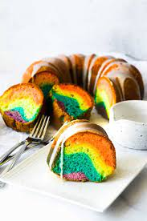

Rainbow Bundt Cake

A delicious and easy to make rainbow bundt cake!
A vibrant and colorful rainbow cake.. come get ya some!
Ingredients
- 2TBS flour
- 1 package white cake mix
- 1 ounce instant vanilla pudding mix
- 4 eggs lightly beaten
- 1 cup sour cream
- 1/2 cup butter, melted
- 1/2 cup water
- 1TSP white sugar
- 1 drop of each color food coloring
- 16OZ chocolate frosting
Steps
- preheat oven to 350 degrees and grease/flour a 10 cup fluted tube pan.
- combine cake mix, pudding, eggs, sour cream, butter, water, and sugar in mixing bowl, beat that shit for a couple minutes
- divide batter into 6 bowls, and tint each batch a different color
- stack the batters on top of eachother and bake that shit